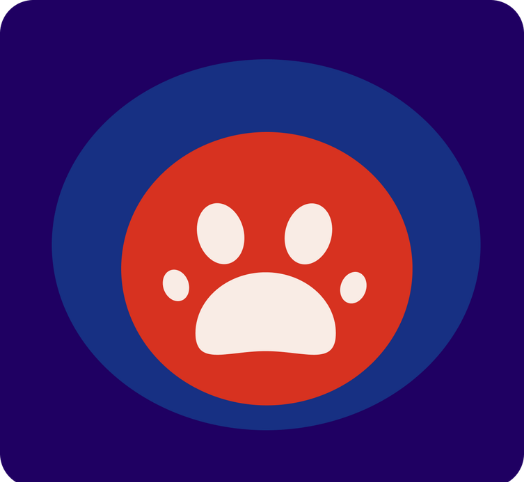
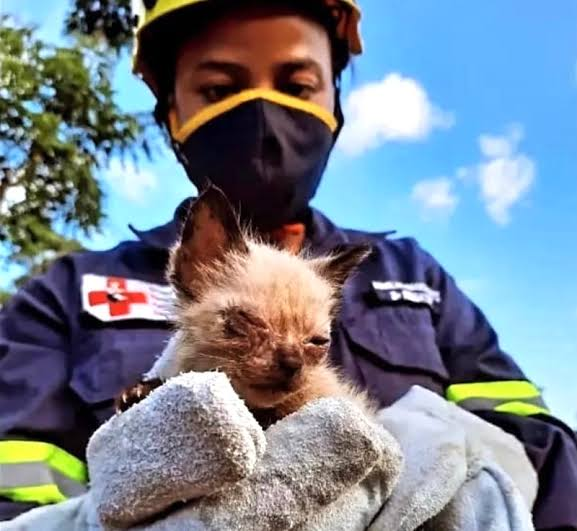
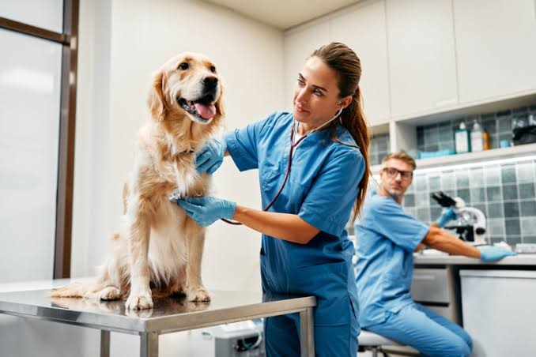
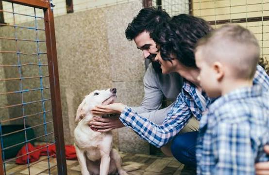

Todo animal que vive na rua merece um caminho de volta para casa.
Resgatamos, oferecemos cuidados e encontramos famílias para cães e gatos abandonados na cidade de São Paulo. Um trabalho diário, sustentado por quem acredita que todo bichinho deveria ter seu lar.

Como funciona?
Do primeiro chamado até a chegada a um novo lar, cada animal passa pelas mesmas três etapas:

Resgate
Recebemos as denúncias, avaliamos a veracidade da informação e vamos até o animal, muitas vezes em situação de rua, maus-tratos ou abandono.

Cuidado
Realizamos exames, vacinação, castração e tratamento veterinário completo antes de disponibilizar qualquer animal para adoção.

Adoção
Avaliamos cada lar rigorosamente, a fim de garantir que o animal não se encontre em situação de vulnerabilidade novamente.
Castração popular nas comunidades
Mutirões gratuitos de castração para reduzir o abandono de animais, em parceria com clínicas veterinárias locais.
Nos ajude a melhorar esse projeto!
Seja voluntário, apadrinhe um animal ou contribua com uma doação mensal.